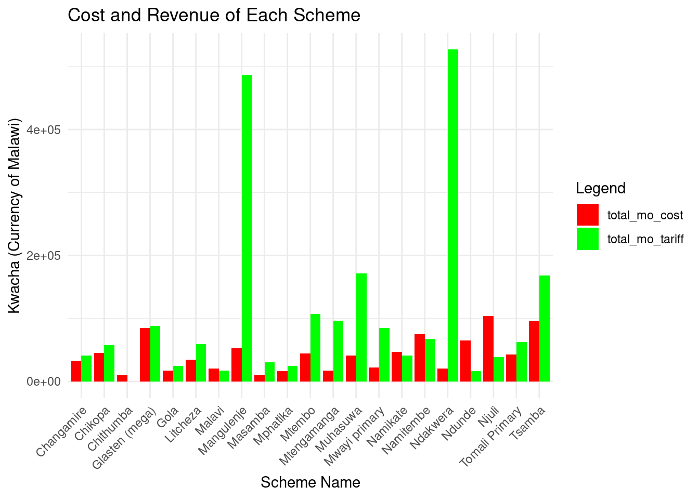
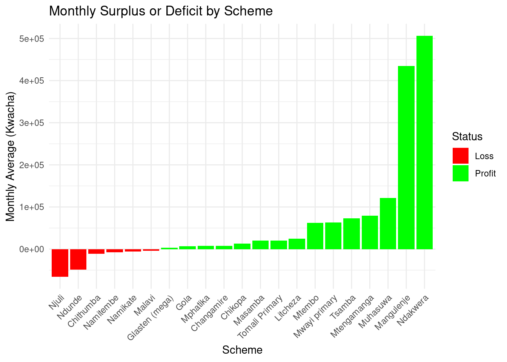
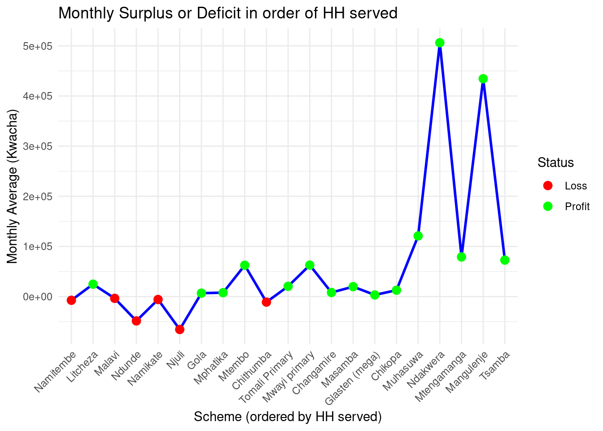

![]()
# Load packages
library(tidyverse)
library(dplyr)
library(readr)
library(ggplot2)
#library(ggrepel)
# Read data
raw_data <- read_csv(here::here("data/raw/WFP_data_cleaned_with_joseph_7_15.csv"))First doc creation - data analysis
Introduction
I am in Blantyre, Malawi, working with Water For People (WFP) - Malawi to collect data on their rural piped water schemes. WFP has built many piped water schemes for rural communities, either from scratch or by upgrading an existing handpump borehole. Once the scheme is handed over to the community, the community is responsible for keeping the system running, encouraging ownership and sustainability, but some schemes have been struggling to finance their own repairs.
I have been surveying these rural water scheme committees, collecting data on the costs they incur for keeping their water systems running and the monthly revenue they collect via tariffs. By comparing the costs and revenue generated by the schemes, I will aim to provide insight on the best practices in the rural water sector. The goal is to determine the gaps between costs and revenue, identify any trends between scheme management models and scheme success, and provide stakeholders with the results to encourage data-based decision making. Identifying these trends will help law makers and scheme committees to implement best practices going forward, encouraging sustainability of these rural schemes.
My raw data set consists quantitative data regarding costs of CapEx, CapManEx, and OpEx, quantitative data regarding tariff revenue generated, qualitative data regarding tariff collection methods, and qualitative data regarding scheme sustainability and productivity.
Methods
Reading the Data
Data Exploration Approach
The survey used for data collection was designed by myself in partnership with WFP. Due to resource allocation and a language barrier between myself and the rural communities, we needed to rely on local government workers to collect the majority of this data. These workers are called “Water Monitoring Assistants”, or “WMAs”, and they oversee water access infrastructure in their respective rural areas.
WFP and myself hosted a training session with the WMAs to explain the purpose of this study and to teach them how to go about delivering this survey to the water scheme committees. Fuel was then provided to the WMAs by WFP and they were sent out to their respective areas.
Initial Data Tidying
With myself being several degrees removed from the raw data we are collecting, many of the survey responses needed some cleaning up before I was able to start analyzing.
Initial data tidying outside of posit.cloud consisted heavily of fixing obvious data entry errors, addressing inconsistencies or questions left blank, and creating useful data out of response discrepancies.
Some questions were often skipped over or answered partially. Some of the data received was contradictory and needed follow-up outreach for clarification. Some responses were difficult to decipher due to the language barrier. Surveys with these issues were rejected and sent back to the corresponding WMA for re-submission, along with a direct follow-up with the WMA.
The resulting tidied data set, WFP_data_cleaned_with_joseph_7_15.csv, was then uploaded to the data/raw folder for further data tidying and analysis.
Results
Initial Data Exploration
I started my initial data tidying within posit.cloud by refining my data set to be smaller and more user-friendly . @select-variables selects only the columns that I want to be working with. @rename-variables renames my variables, or columns, to names that will be easier to code with. @rename-schemes renames some of the schemes for cleaner looking outputs later on.
#Few initial functions I sometimes used to observe the data in posit.cloud
#head(raw_data)
#dim(raw_data)
#spec(raw_data)
#colnames(raw_data)
# Select only the desired columns
filtered_data <- raw_data |>
select(
# General Info
"What is your full name?",
"District",
"What is the name of the scheme you are currently visiting?",
# Misc
"How many total households does this scheme service? (HH)",
"When was the scheme finished being built?...3",
"How much total water can they hold? (liters)",
"What is the average household monthly income in this village? (kwacha)",
# CapManEx
"ADDED: Total CapManEx costs (Kwacha)",
# OpEx
"ADDED: Are guards stationed at the scheme by the scheme committee?",
"ADDED: If yes, how much are they paid in total? (kwacha)",
"ADDED: Do they consistently use chlorine?",
"ADDED: average monthly minor repair costs",
"ADDED: Is the tank ever cleaned?",
"ADDED: What additional monthly costs does the cleaning incur?",
# Tariff Revenue
"What percent of users regularly pay the tariffs? (%)",
"ADDED: What percent can pay but don't want to?",
"ADDED: What percent can't pay?",
"How are tariffs collected?",
"How many communal taps are there?",
"ADDED: Communal tap monthly rate",
"How many private household taps are there?",
"ADDED: What is the monthly private household connection rate? (monthly kwacha)",
"How many Public Institution taps are there? Ex) school or healthcare facility",
"ADDED: Public Institution monthly contribution",
"How much is currently in your bank account? (kwacha)",
"How much do you have in cash? (kwacha)",
# Concluding Questions
"ADDED: Is the scheme able to finance its own repairs?",
"ADDED: Do the tanks ever go empty?",
"ADDED: Did the scheme committee mention the need for better community engagement or more trainings?"
)
# Delete empty rows
filtered_data <- filtered_data[-c(25:35), ]# Save the original column names encase I want to view them later
collumns <- colnames(filtered_data)
# Rename columns for easier coding
filtered_data_renamed <- filtered_data |>
rename(name = "What is the name of the scheme you are currently visiting?",
HH = "How many total households does this scheme service? (HH)",
HH_monthly_income = "What is the average household monthly income in this village? (kwacha)",
date_finished = "When was the scheme finished being built?...3",
water_volume = "How much total water can they hold? (liters)",
CapManEx_cost = "ADDED: Total CapManEx costs (Kwacha)",
guard = "ADDED: Are guards stationed at the scheme by the scheme committee?",
guard_mo_cost = "ADDED: If yes, how much are they paid in total? (kwacha)",
cl = "ADDED: Do they consistently use chlorine?",
tank_cleaned = "ADDED: Is the tank ever cleaned?",
tank_cleaned_cost = "ADDED: What additional monthly costs does the cleaning incur?",
per_reg_pay = "What percent of users regularly pay the tariffs? (%)",
per_wont_pay = "ADDED: What percent can pay but don't want to?",
per_cant_pay = "ADDED: What percent can't pay?",
comm_taps = "How many communal taps are there?",
comm_tap_rate = "ADDED: Communal tap monthly rate",
HH_taps = "How many private household taps are there?",
HH_tap_rate = "ADDED: What is the monthly private household connection rate? (monthly kwacha)",
PI_taps = "How many Public Institution taps are there? Ex) school or healthcare facility",
PI_mo_rate = "ADDED: Public Institution monthly contribution",
bank_account = "How much is currently in your bank account? (kwacha)",
cash = "How much do you have in cash? (kwacha)",
finance_own_repairs = "ADDED: Is the scheme able to finance its own repairs?",
tanks_empty = "ADDED: Do the tanks ever go empty?",
want_trainings = "ADDED: Did the scheme committee mention the need for better community engagement or more trainings?",
minor_repair_mo_cost = "ADDED: average monthly minor repair costs",
)
# Save the renamed column names for ease of viewing as I move forward
collumns_renamed = colnames(filtered_data_renamed)# Rename some of the schemes to make later outputs more visually appealing
filtered_data_renamed <- filtered_data_renamed %>%
mutate(
name = case_when(
name == "Glasten scheme" ~ "Glasten (mega)",
name == "Njuli water scheme" ~ "Njuli",
name == "Kudziwa Scheme" ~ "Kudziwa",
name == "Ndunde water scheme" ~ "Ndunde",
name == "Malavi scheme" ~ "Malavi",
name == "Chikopa scheme" ~ "Chikopa",
name == "Muhasuwa water scheme" ~ "Muhasuwa",
name == "Ndakwera community" ~ "Ndakwera",
name == "Mwayi primary water scheme" ~ "Mwayi primary",
name == "Mphatika Water system" ~ "Mphatika",
name == "Tomali Primary School Scheme" ~ "Tomali Primary",
name == "Mangulenje Water Scheme" ~ "Mangulenje",
TRUE ~ name # keep all other names unchanged
)
)
# Remove schemes that did not have adequate data
filtered_data_renamed <- filtered_data_renamed |>
filter(!name %in% c("Kudziwa", "Ntondeza 1", "Kakoma Health center"))Now that I have isolated the data I want to work with, I need to make sure my variables are in the right format for analysis. @make-numerical changes my quantitative data into numerical variables.
# Changing the necessary data into numerical for calculations
filtered_data_renamed <- filtered_data_renamed |>
mutate(across(
c(HH, HH_monthly_income, water_volume, CapManEx_cost, guard_mo_cost,
per_reg_pay, per_wont_pay, per_cant_pay, comm_taps, comm_tap_rate,
HH_taps, HH_tap_rate, PI_mo_rate, bank_account, cash, minor_repair_mo_cost),
as.numeric
))Now the data is cleaned up and saved in the filtered_data_renamed object.
Data Analysis
Next, I want to start my initial analysis by creating some of the variables I will be working with directly. @create-variables calculates total monthly CapManEx costs, total monthly OpEx costs, and total monthly revenue for each scheme.
## CAPMANEX ##
# Need to start by calc the total months that have passed since completion
library(lubridate)
filtered_data_renamed <- filtered_data_renamed |>
mutate(
mo_since_built = interval(ymd(date_finished), today()) %/% months(1)
)
# Now I want to calculate the monthly CapManEx costs
filtered_data_renamed <- filtered_data_renamed |>
mutate(
CapManEx_mo_cost = CapManEx_cost / mo_since_built
)
## OPEX ##
# First we need to create a new column for chlorine costs because most of the data on chlorine use was deemed not useable
filtered_data_renamed <- filtered_data_renamed |>
mutate(
cl_mo_cost = if_else(cl %in% c("yes", "Yes"), 12500, NA_real_)
)
# Now I want to calc total monthly OpEx costs by adding the cost of the guards, minor repairs, and chlorine
filtered_data_renamed <- filtered_data_renamed |>
mutate(
OpEx_mo_cost = rowSums(across(c(guard_mo_cost, minor_repair_mo_cost, cl_mo_cost)), na.rm = TRUE)
)
## TOTAL COST ##
# Now I want to add CapManEx and OpEx to get the total monthly cost
filtered_data_renamed <- filtered_data_renamed |>
mutate(
total_mo_cost = rowSums(across(c(CapManEx_mo_cost, OpEx_mo_cost)), na.rm = TRUE)
)
## TARIFF COLLECTION ##
# Calc revenue collected by communal taps
filtered_data_renamed <- filtered_data_renamed |>
mutate(
comm_mo_tariff = HH * per_reg_pay / 100 * comm_tap_rate
)
# Calc revenue collected by household private taps
filtered_data_renamed <- filtered_data_renamed |>
mutate(
HH_mo_tariff = HH_taps * HH_tap_rate
)
# Add up communal, private household, and Public Institution incomes for total monthly income
filtered_data_renamed <- filtered_data_renamed |>
mutate(
total_mo_tariff = rowSums(across(c(comm_mo_tariff, HH_mo_tariff, PI_mo_rate)), na.rm = TRUE)
)Now that I have some variables to work with, I will analyzing my data. First, I want to output a table Table 1 highlighting the key features of each scheme.
library(gt)
# Select relevant columns
table_for_show <- filtered_data_renamed |>
select(
District, name, tank_cleaned, guard, comm_taps, HH_taps, PI_taps,
per_reg_pay, tanks_empty, total_mo_cost, total_mo_tariff,
CapManEx_mo_cost, OpEx_mo_cost
)# All Scheme table
table_for_show |>
gt() |>
tab_header(title = "All Scheme Data") |>
fmt_number(columns = where(is.numeric), decimals = 1)| All Scheme Data | ||||||||||||
|---|---|---|---|---|---|---|---|---|---|---|---|---|
| District | name | tank_cleaned | guard | comm_taps | HH_taps | PI_taps | per_reg_pay | tanks_empty | total_mo_cost | total_mo_tariff | CapManEx_mo_cost | OpEx_mo_cost |
| Chiradzulu | Litcheza | no | No | 6.0 | 10.0 | 6.0 | 30.0 | yes | 34,772.7 | 59,500.0 | 2,272.7 | 32,500.0 |
| Chiradzulu | Namitembe | no | Yes | 6.0 | 10.0 | 6.0 | 50.0 | no | 74,833.3 | 67,500.0 | 17,333.3 | 57,500.0 |
| Chiradzulu | Mtembo | yes | Yes | 10.0 | 10.0 | 0.0 | 60.0 | yes | 44,500.0 | 107,000.0 | NA | 44,500.0 |
| Chiradzulu | Namikate | yes | Yes | 4.0 | 0.0 | 3.0 | 60.0 | yes | 46,761.6 | 41,000.0 | 3,428.6 | 43,333.0 |
| Chiradzulu | Glasten (mega) | no | Yes | 28.0 | 0.0 | 0.0 | 70.0 | yes | 84,928.6 | 88,200.0 | 2,428.6 | 82,500.0 |
| Chiradzulu | Njuli | no | Yes | 4.0 | 0.0 | 2.0 | 60.0 | no | 104,000.0 | 38,400.0 | 0.0 | 104,000.0 |
| Chiradzulu | Ndunde | no | Yes | 5.0 | NA | 11.0 | 60.0 | no | 65,000.0 | 16,500.0 | 3,100.0 | 61,900.0 |
| Chikwawa | Tsamba | yes | Yes | 17.0 | NA | 1.0 | 70.0 | yes | 95,308.5 | 168,000.0 | 808.5 | 94,500.0 |
| Chiradzulu | Malavi | no | No | 2.0 | NA | 4.0 | 82.0 | no | 20,375.0 | 16,856.0 | 4,875.0 | 15,500.0 |
| Chiradzulu | Changamire | no | Yes | 10.0 | NA | NA | 60.0 | no | 33,000.0 | 41,100.0 | NA | 33,000.0 |
| Chiradzulu | Chikopa | no | Yes | 9.0 | NA | 1.0 | 50.0 | no | 45,000.0 | 57,750.0 | NA | 45,000.0 |
| Chiradzulu | Muhasuwa | no | Yes | 9.0 | 10.0 | 2.0 | 85.0 | yes | 41,400.0 | 162,375.0 | 8,000.0 | 33,400.0 |
| Chikwawa | Gola | no | No | 3.0 | NA | 3.0 | 75.0 | no | 17,500.0 | 24,375.0 | NA | 17,500.0 |
| Chikwawa | Chithumba | yes | No | NA | NA | 6.0 | 30.0 | no | 11,000.0 | 0.0 | NA | 11,000.0 |
| Chikwawa | Ndakwera | yes | No | 10.0 | NA | NA | 100.0 | no | 20,800.0 | 527,000.0 | NA | 20,800.0 |
| Chikwawa | Mwayi primary | no | No | 6.0 | 10.0 | 2.0 | 65.0 | yes | 22,000.0 | 84,775.0 | NA | 22,000.0 |
| Chikwawa | Masamba | no | No | 10.0 | NA | NA | 40.0 | yes | 11,000.0 | 30,800.0 | NA | 11,000.0 |
| Chikwawa | Mtengamanga | yes | No | 1.0 | 10.0 | 8.0 | 50.0 | no | 17,500.0 | 96,500.0 | NA | 17,500.0 |
| Chikwawa | Mphatika | no | No | 6.0 | NA | 4.0 | 70.0 | no | 16,700.0 | 24,500.0 | NA | 16,700.0 |
| Chikwawa | Tomali Primary | yes | No | 4.0 | NA | 2.0 | 60.0 | yes | 42,500.0 | 63,000.0 | NA | 42,500.0 |
| Chikwawa | Mangulenje | yes | yes | 25.0 | 5.0 | 2.0 | 70.0 | no | 52,500.0 | 487,000.0 | NA | 52,500.0 |
Now that we have a table showing the key data for each scheme, I want to show an overview of the numerical data. Table 2 shows the mean and standard deviation for the total monthly CapManEx costs, total monthly OpEx costs, total monthly costs, and total monthly tariffs (total_mo_cost, total_mo_tariff, CapManEx_mo_cost, and OpEx_mo_cost).
# Select variables to show the mean and SD of
summary_table <- filtered_data_renamed |>
summarise(
across(
c(per_reg_pay, total_mo_cost, total_mo_tariff, CapManEx_mo_cost, OpEx_mo_cost),
.fns = list(
Mean = ~mean(.x, na.rm = TRUE),
SD = ~sd(.x, na.rm = TRUE)
),
.names = "{.col}_{.fn}"
)
)
# Convert the wide-format summary into a long, readable format:
summary_long <- summary_table |>
pivot_longer(
cols = everything(),
names_to = c("Variable", "Statistic"),
names_pattern = "^(.*)_(Mean|SD)$",
values_to = "Value"
) |>
pivot_wider(
names_from = Statistic,
values_from = Value
)
# All Scheme table
summary_long |>
gt() |>
tab_header(title = "Mean and SD for numerical data") |>
fmt_number(columns = where(is.numeric), decimals = 1)| Mean and SD for numerical data | ||
|---|---|---|
| Variable | Mean | SD |
| per_reg_pay | 61.8 | 17.0 |
| total_mo_cost | 42,922.8 | 27,820.4 |
| total_mo_tariff | 104,863.4 | 140,932.0 |
| CapManEx_mo_cost | 4,694.1 | 5,279.5 |
| OpEx_mo_cost | 40,911.1 | 26,961.9 |
Here Table 2 shows that the average monthly revenue is much more than the average monthly costs of the schemes. It also shows that on average about 60% of users are paying tariffs.
Now I will start my initial data visualizations. I want a visualization of how the cost and revenue of each scheme compares to assess how the schemes are performing. Figure 1 is a bar graph that shows how much monthly costs each scheme incurs on average in red, and how much monthly revenue it is collecting on average in green.
# Reshape data to long format
plot_data <- filtered_data_renamed |>
select(name, total_mo_cost, total_mo_tariff) |>
pivot_longer(cols = c(total_mo_cost, total_mo_tariff),
names_to = "type",
values_to = "kwacha")
# Create the double bar graph
ggplot(plot_data, aes(x = name, y = kwacha, fill = type)) +
geom_bar(stat = "identity", position = "dodge") +
scale_fill_manual(values = c(
"total_mo_cost" = "red",
"total_mo_tariff" = "green"
)) +
labs(title = "Cost and Revenue of Each Scheme",
x = "Scheme Name",
y = "Kwacha (Currency of Malawi)",
fill = "Legend") +
theme_minimal() +
theme(
axis.text.x = element_text(angle = 45, hjust = 1)
)

Here in Figure 1 we can see that the Mangulenje and Ndakwera schemes make significantly more than the other schemes. We can also see that most of the schemes make more than they spend, but it is not that clear.
I want to show this information easier by calculating how much money each scheme is making or losing each month. I will do this by subtracting costs from revenue and plotting this in a colored bar graph. Figure 2 shows schemes’ monthly net revenue, ordering them from losing the most to making the most. Schemes in the negative are plotted in red, and schemes in the positive are plotted in green.
# Find info on monthly money
filtered_data_renamed <- filtered_data_renamed |>
mutate(mo_avg = total_mo_tariff - total_mo_cost)
# Create a new column to label profit/loss
filtered_data_renamed <- filtered_data_renamed |>
mutate(status = if_else(mo_avg >= 0, "Profit", "Loss"))
# Plot
ggplot(filtered_data_renamed, aes(x = reorder(name, mo_avg), y = mo_avg, fill = status)) +
geom_bar(stat = "identity") +
scale_fill_manual(values = c("Profit" = "green", "Loss" = "red")) +
labs(
title = "Monthly Surplus or Deficit by Scheme",
x = "Scheme",
y = "Monthly Average (Kwacha)",
fill = "Status"
) +
theme_minimal() +
theme(
axis.text.x = element_text(angle = 45, hjust = 1)
)

Here Figure 2 shows that overall, the majority of the schemes are collecting more revenue than the costs they incur, meaning that they have been able to finance their own OpEx and CapManEx thus far.
Now I want to plot this data in order of households served to see if there is a correlation between households served and scheme success. Figure 3 plots a line graph of the schemes in order of increasing households served on the x-axis, and their net profit on the y-axis.
# Arrange by HH to control order on x-axis
filtered_data_renamed_ordered <- filtered_data_renamed |>
arrange(HH) |>
mutate(name = factor(name, levels = name)) # Keep the order
# Plot with scheme names on x-axis
ggplot(filtered_data_renamed_ordered, aes(x = name, y = mo_avg)) +
geom_line(group = 1, color = "blue", size = 1) +
geom_point(aes(color = mo_avg >= 0), size = 3) +
scale_color_manual(values = c("TRUE" = "green", "FALSE" = "red"), labels = c("Loss", "Profit")) +
labs(
title = "Monthly Surplus or Deficit in order of HH served",
x = "Scheme (ordered by HH served)",
y = "Monthly Average (Kwacha)",
color = "Status"
) +
theme_minimal() +
theme(
axis.text.x = element_text(angle = 45, hjust = 1)
)

Figure 3 shows that the schemes that serve more households are typically doing better then the schemes serving less households, suggesting a trend between more households served and scheme success.
Now I want to calculate the average monthly rates based on if they use a guard or not. Table 3 is a table that shows the average net profit of all the schemes grouped by if they use a guard or not.
# Create a binary guard usage column
guard_avg <- filtered_data_renamed |>
mutate(guard_used = if_else(tolower(guard) == "yes", "Uses Guard", "No Guard")) |>
group_by(guard_used) |>
summarise(
avg_mo_avg = mean(mo_avg, na.rm = TRUE),
.groups = "drop"
)
guard_avg |>
gt() |>
tab_header(title = "Average net profit based on guard usage") |>
fmt_number(columns = where(is.numeric), decimals = 1)| Average net profit based on guard usage | |
|---|---|
| guard_used | avg_mo_avg |
| No Guard | 71,315.8 |
| Uses Guard | 53,417.5 |
Table showing the average net profit grouped by if they use a guard
Table 3 shows that schemes that do not use a guard often have higher net monthly profits.
Now I want to do the same calculation excluding the Ndakwera and Mangulenje schemes because they are somewhat of outliers. Table 4 does the same calculation as before, but excludes the highest grossing schemes.
guard_avg_filtered <- filtered_data_renamed |>
# Step 1: Exclude Ndakwera and Mangulenje
filter(!name %in% c("Ndakwera", "Mangulenje")) |>
# Step 2: Create a clean guard usage label
mutate(guard_used = if_else(tolower(guard) == "yes", "Uses Guard", "No Guard")) |>
# Step 3: Group and calculate average mo_avg
group_by(guard_used) |>
summarise(
avg_mo_avg = mean(mo_avg, na.rm = TRUE),
.groups = "drop"
)
guard_avg_filtered |>
gt() |>
tab_header(title = "Average net profit based on guard usage excluding outliers") |>
fmt_number(columns = where(is.numeric), decimals = 1)| Average net profit based on guard usage excluding outliers | |
|---|---|
| guard_used | avg_mo_avg |
| No Guard | 22,995.4 |
| Uses Guard | 15,309.3 |
Table showing the average net profit grouped by if they use a guard, excluding outliers
Here we see that Table 4 still shows that schemes that do not use a guard often have higher net monthly profits. This is likely because guards are paid 30-50,000 kwacha, often being the largest OpEx cost for the schemes.
Conclusions
Summary of Findings
- The majority of the schemes are collecting more revenue through tariffs than they are incurring costs, meaning that the majority of schemes have been able to finance their own OpEx and CapManEx
The 5 schemes that served the most households also saw the greatest net income
The schemes in the upper half of households served were more often in the net positive than schemes in the lower half of households served
Schemes that used guards were not necessarily doing better than schemes that were not using guards
Questions and Next Steps
Questions:
Is this data reliable?
The data was collected by government workers, some of which had difficulty understanding the overall goal of the survey. Many surveys had to be rejected because of contradictory data.
Some of the answers were changed by WFP due to suspection of the water scheme committees lying. According to WFP, it is common for villages to lie about their circumstances and skew data to make it seem like they are doing worse than they actually are in hopes of getting more benefits from WFP
Some of the villages did not keep track of their actual costs and revenues, and answered questions based off of assumptions
Is this data useful?
- While this data is helpful in the aspect of providing solid numbers to stakeholders, it is questionable whether this will impact future decision making of water access stakeholders.
Next steps:
assess scheme data based on district
assess scheme data based on number of each tap type: communal, private, and public institution
take into account of future CapManEx costs - most of these schemes are less than 4 years old and have not incurred major CapManEx costs that would be expected of older schemes
assess other factors from the data that contribute to tariff collection, such as village average income, percent of users regularly paying tariffs, and if the scheme committees expressed the need for more training